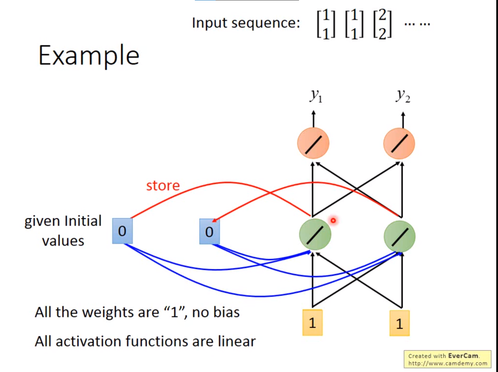
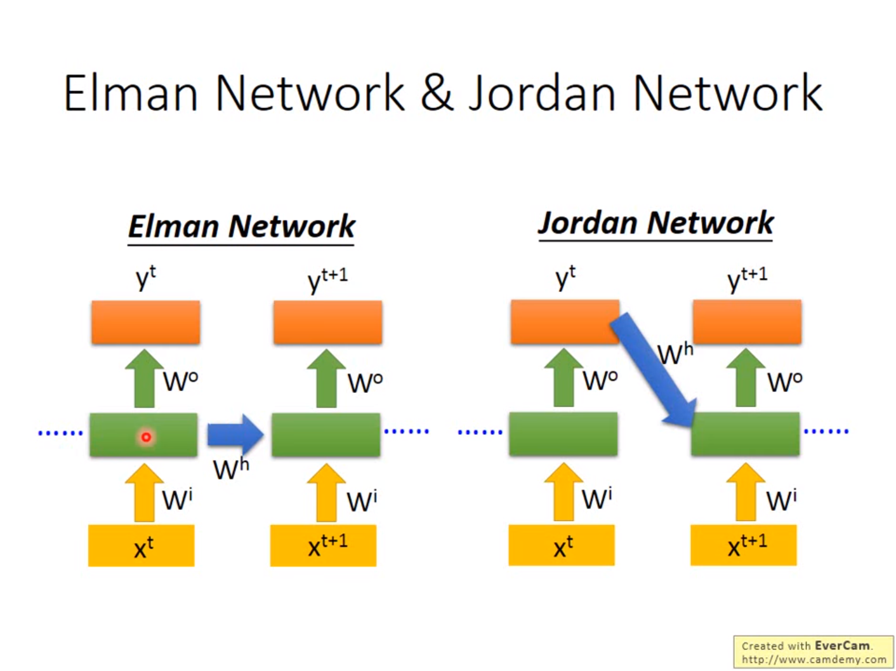
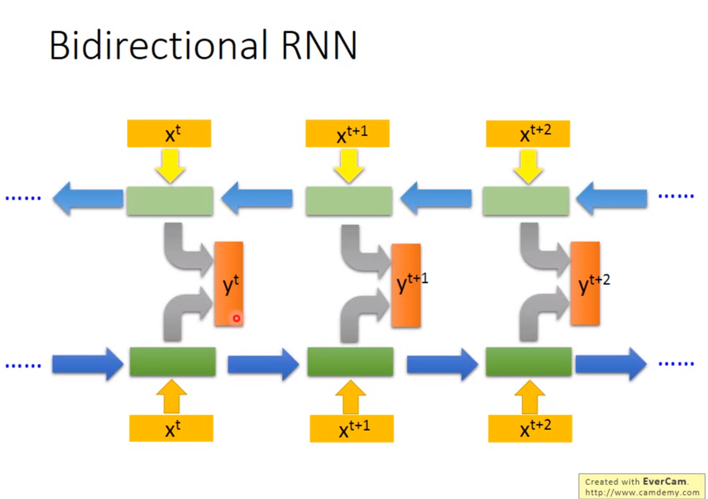
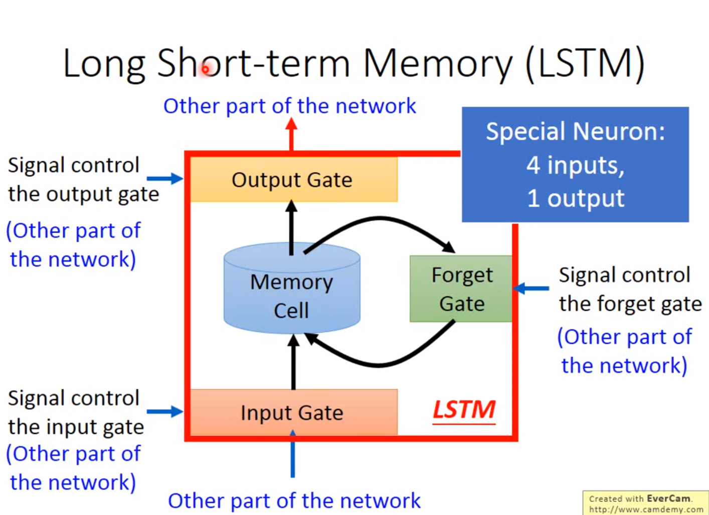
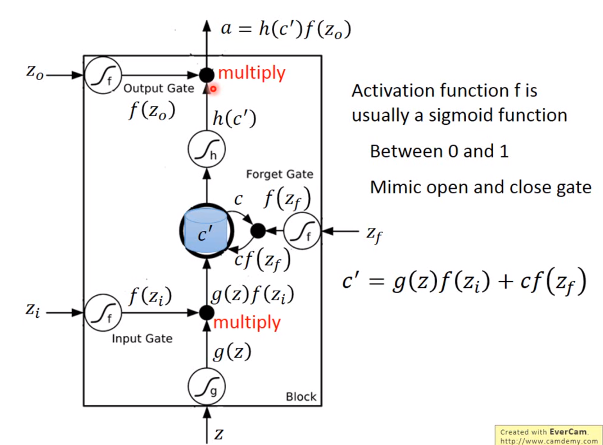
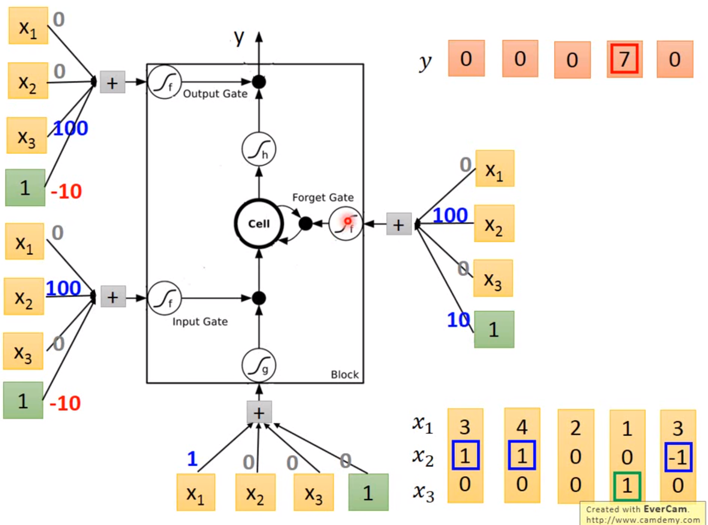
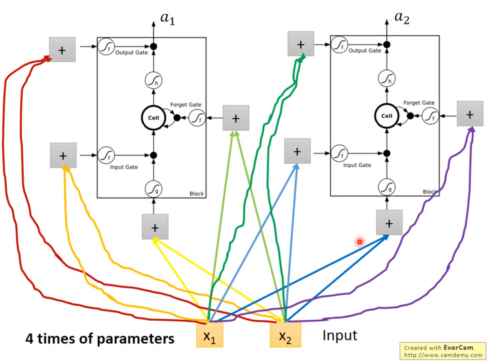
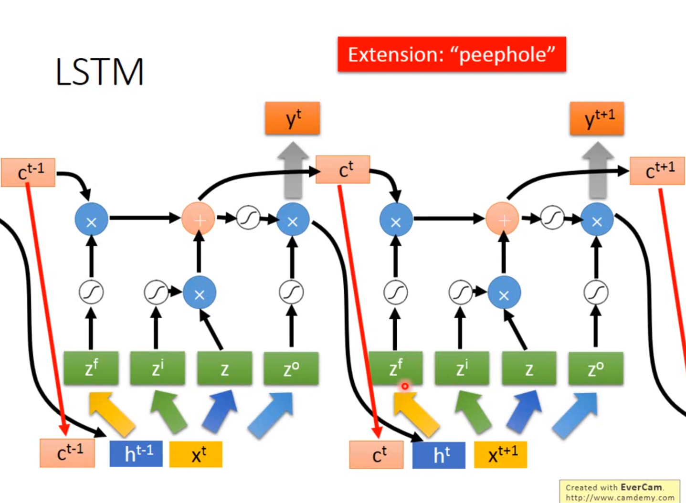
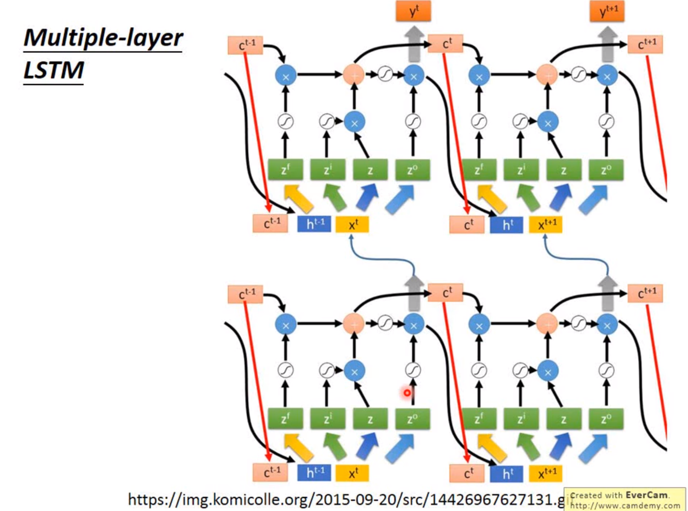
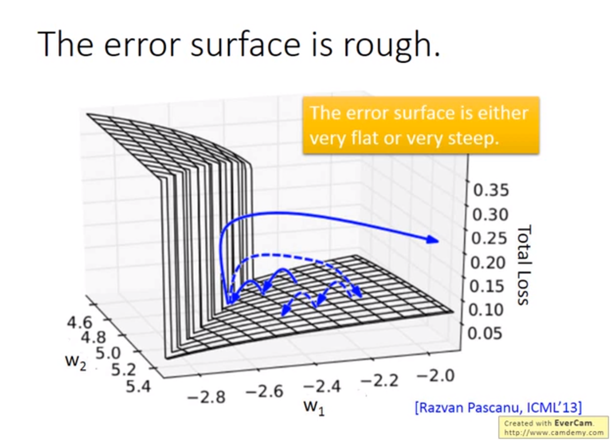

ML2020note2：RNN 循环神经网络的由来 原理 以及标准LSTM
RNN
Slot Filling
I will arrive Taipei on November 2nd
挖词槽，找到关键词的任务，如果使用原本的神经网络（对每一个词汇进行编码），难以分析前后文的信息，即网络缺乏记忆力。
Recurrent Neural Network
循环神经网络，隐藏层的输出会被存储在内存中，参与下一个序列值的计算

图中蓝色部分就是被记忆的部分，初始会有一个值，之后每次序列计算完成后都会把绿色存入蓝色
改变输入序列的顺序，得到的结果完全不一样！序列输入的顺序影响输出的值。
有两类RNN的基本结构，jordan是把结果保存在内存里，Lee说jordan的效果似乎更好，可能是因为有结果target

Bidirection双向的网络

序列不同方向训练，结果相加输出
网络可以看到整个的句子
LSTM
较长的短期记忆
Long Short-Term Memory

有几道门控制着记忆单元的存储内容，门的开关信号都是通过学习得到
使用sigmoid来模拟0，1信号，模拟门的开关。$f(z_f)=0$时执行了遗忘的功能，$f(z_i)=0$时执行输入关闭的效果

实际上这些门是通过调整权重实现的，会让输入的向量中的某一些元素乘以权重得到控制门开闭的效果
例如在下图中，向量第一个元素代表输入，第二个元素1的时候开输入门，-1的时候关闭遗忘门，第三个元素等于1的时候开启输出门

如果用LSTM模块直接替代原有的网络神经单元，参数会变成四倍！

LSTM的循环执行过程，每一时刻输入的量有原输入，LSTM模块上一时刻的输出，以及上一时刻的cell的内容

上述的LSTM层会重复个五六层以来达到较好的效果，相当复杂，，但是目前也成了RNN的标准操作，当人们谈论RNN的时候，他一般就是在说lstm

GRU：LSTM的简化版本，只有两个gate，但据说表现比较相当，参数少了三分之一
SimpleRNN：一开始讲的最简单的rnn结构
cost func and training
Backpropagation through time BPTT
。。。Lee没有讲，是与时间序列有关的反向传播算法
RNN的训练是比较困难的，训练的loss曲线会有很剧烈的抖动，RNN的error surface非常都平坦或者陡峭，导致振荡可能很剧烈

这种崎岖的原因在于循环神经网络会导致memory乘以w的多次方，出现梯度弥散和爆炸
LSTM的优势：可以处理梯度弥散（非爆炸）！这是广泛使用的原因
会拿掉一些比较平坦的地方，但还是有比较陡峭的地方，一般学习率learning rate设置的比较小
- memory和input是相加的关系
- 如果forget gate开着那么就不会有梯度弥散gradient vanishing（简单RNN的memory每一个时刻都会forget然后变成新的值，也就是说对memory造成影响的东西会较为长久的留在里面，造成影响）
- GRU Gated Recurrent Unit只有两个gate，参数少不容易overfit，精神是“旧的不去新的不来”
一些应用：
- Many to One
- Many to Many（NLP，CTC）
- Many to Many（No Limitation）
- beyond sequence
- auto encoder使语音变成向量
Attention-based model
注意力机制是从机器的memory中提取出感兴趣的部分